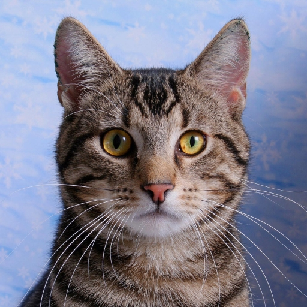
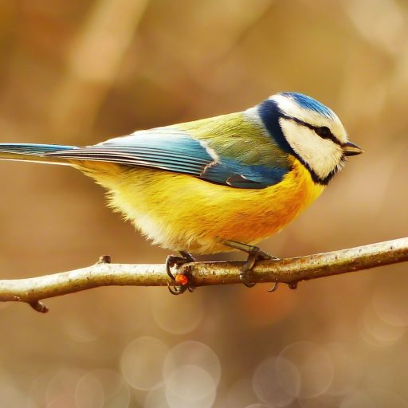

Dogs are one of the most common domestic pets and often called the "Man's Best Friend".
They can offer comfort and ease your worries, all dogs are capable of being loyal and loving.
That's the reason why they're the best pets.

Cats are as well one of the most common domestic pets and they are also really cute and adorable.
Like people, each cat has a unique personality and some are rude, passionate, and mean...really mean.
Some people say they are the best pets and some are not.

Birds are the best pets especially when it you're going to retire and they can also mimic and remember
what they hear usually. Some birds can't mimic sounds that they hear, and if you want a beginner bird. I highly recommend
getting Cockatiel.